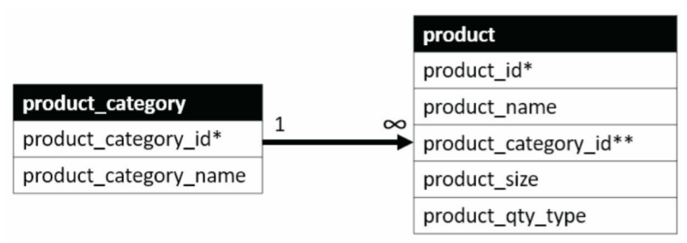

Chapter 5 SQL JOINs
5.1 Chapter Notes
JOINs are used to pull data from across multiple related tables.
Let’s say we want to list the name of each product along with it’s category. These are stored in different tables:

SELECT *
FROM product
LEFT JOIN product_category
ON product.product_category_id = product_category.product_category_id
LIMIT 5| product_id | product_name | product_size | product_category_id | product_qty_type | product_category_id..6 | product_category_name |
|---|---|---|---|---|---|---|
| 1 | Habanero Peppers - Organic | medium | 1 | lbs | 1 | Fresh Fruits & Vegetables |
| 2 | Jalapeno Peppers - Organic | small | 1 | lbs | 1 | Fresh Fruits & Vegetables |
| 3 | Poblano Peppers - Organic | large | 1 | unit | 1 | Fresh Fruits & Vegetables |
| 4 | Banana Peppers - Jar | 8 oz | 3 | unit | 3 | Packaged Prepared Food |
| 5 | Whole Wheat Bread | 1.5 lbs | 3 | unit | 3 | Packaged Prepared Food |
The code above stitches together the product table and the product_category table, used the product_category_id column in each. This is a LEFT JOIN, which means:
- All rows in the product table are kept, even if there are no matches in the product_category table
- Rows in the product_category table for IDs that don’t appear in the product table are dropped. If there are no products in the product table with product_category_id 7 (Non-Edible Products), then that row of the product_category table will not appear in the results.
Also, the code above is the first time I’ve seen the code not specify the database. I.e. it refers to product instead of farmers_market.product. I’m not exactly sure about when this can be left out, but it’s not specific to JOINs at all - the farmers_market part can be removed from the queries in previous chapters and the code will still run.
Note that product_category_id appears in the results above twice - one from each table (although I believe R is adding “..6” to the second one, since it doesn’t like data frames with multiple columns with the same name). We could prevent this by specifying which columns to include, or by creating an alias for the column names that specifies which table each ID column came from:
SELECT product.product_id,
product.product_name,
product.product_category_id AS product_prod_cat_id,
product_category.product_category_id AS category_prod_cat_id,
product_category.product_category_name
FROM product
LEFT JOIN product_category
ON product.product_category_id = product_category.product_category_id
LIMIT 5| product_id | product_name | product_prod_cat_id | category_prod_cat_id | product_category_name |
|---|---|---|---|---|
| 1 | Habanero Peppers - Organic | 1 | 1 | Fresh Fruits & Vegetables |
| 2 | Jalapeno Peppers - Organic | 1 | 1 | Fresh Fruits & Vegetables |
| 3 | Poblano Peppers - Organic | 1 | 1 | Fresh Fruits & Vegetables |
| 4 | Banana Peppers - Jar | 3 | 3 | Packaged Prepared Food |
| 5 | Whole Wheat Bread | 3 | 3 | Packaged Prepared Food |
The chapter also demonstrates aliasing that is used to shorten the table names in the rest of the query for convenience. It doesn’t affect results. In the code that follows the product table is aliased as “p” and the product_category table is aliased as “pc”.
SELECT p.product_id,
p.product_name,
pc.product_category_id,
pc.product_category_name
FROM product AS p
LEFT JOIN product_category AS pc
ON p.product_category_id = pc.product_category_id
ORDER BY pc.product_category_name, p.product_name
LIMIT 5| product_id | product_name | product_category_id | product_category_name |
|---|---|---|---|
| 10 | Eggs | 6 | Eggs & Meat (Fresh or Frozen) |
| 11 | Pork Chops | 6 | Eggs & Meat (Fresh or Frozen) |
| 13 | Baby Salad Lettuce Mix | 1 | Fresh Fruits & Vegetables |
| 12 | Baby Salad Lettuce Mix - Bag | 1 | Fresh Fruits & Vegetables |
| 17 | Carrots | 1 | Fresh Fruits & Vegetables |
You can see the shortened table names used in the SELECT clause, and when specifying the joining columns and ordering.
In general with aliasing, the AS keyword is optional. The code “product AS p” and “product p” will do the same thing.
RIGHT JOINs work analogously:
SELECT p.product_id,
p.product_name,
pc.product_category_id,
pc.product_category_name
FROM product AS p
RIGHT JOIN product_category AS pc
ON p.product_category_id = pc.product_category_id
ORDER BY p.product_name
LIMIT 5| product_id | product_name | product_category_id | product_category_name |
|---|---|---|---|
| NA | NA | 4 | Freshly Prepared Food |
| 7 | Apple Pie | 3 | Packaged Prepared Food |
| 13 | Baby Salad Lettuce Mix | 1 | Fresh Fruits & Vegetables |
| 12 | Baby Salad Lettuce Mix - Bag | 1 | Fresh Fruits & Vegetables |
| 4 | Banana Peppers - Jar | 3 | Packaged Prepared Food |
A couple points to note about these results.
- All rows from the product_category table are included, even when no product is assigned to that category. In the table above, no products are in category 4 (Freshly Prepared Food), but it still appears in the results.
- Rows from the product_category table can be included multiple times. The results above (when not using LIMIT) will have 24 rows, one for each of the 23 products plus 1 for category 4.
If there could be multiple product categories for each product, then they would both appear in the left join performed above, so the results would have more than 23 rows.
INNER JOINs keep only rows where the product_category_id appears in both tables:
SELECT p.product_id,
p.product_name,
pc.product_category_id,
pc.product_category_name
FROM product AS p
INNER JOIN product_category AS pc
ON p.product_category_id = pc.product_category_id
ORDER BY p.product_name
LIMIT 5| product_id | product_name | product_category_id | product_category_name |
|---|---|---|---|
| 7 | Apple Pie | 3 | Packaged Prepared Food |
| 13 | Baby Salad Lettuce Mix | 1 | Fresh Fruits & Vegetables |
| 12 | Baby Salad Lettuce Mix - Bag | 1 | Fresh Fruits & Vegetables |
| 4 | Banana Peppers - Jar | 3 | Packaged Prepared Food |
| 17 | Carrots | 1 | Fresh Fruits & Vegetables |
In this case the results are the same as the left join, since each product has an assigned product_category_id.
Joins can be performed multiple times, with the second join effectively acting to join together the results of the first join with another table.
5.2 Exercises
Ex. 1
Question
Write a query that INNER JOINs the vendor table to the vendor_booth_assignments table on the vendor_id field they both have in common, and sorts the result by vendor_name , then market_date.
Answer
SELECT *
FROM vendor AS v
INNER JOIN vendor_booth_assignments AS vba
ON v.vendor_id = vba.vendor_id
ORDER BY vendor_name, market_date
LIMIT 5| vendor_id | vendor_name | vendor_type | vendor_owner_first_name | vendor_owner_last_name | vendor_id..6 | booth_number | market_date |
|---|---|---|---|---|---|---|---|
| 8 | Annie’s Pies | Prepared Foods | Annie | Aquinas | 8 | 6 | 2019-04-03 |
| 8 | Annie’s Pies | Prepared Foods | Annie | Aquinas | 8 | 6 | 2019-04-06 |
| 8 | Annie’s Pies | Prepared Foods | Annie | Aquinas | 8 | 6 | 2019-04-10 |
| 8 | Annie’s Pies | Prepared Foods | Annie | Aquinas | 8 | 6 | 2019-04-13 |
| 8 | Annie’s Pies | Prepared Foods | Annie | Aquinas | 8 | 6 | 2019-04-17 |
Ex. 2
Question
Is it possible to write a query that produces an output identical to the output of the following query, but using a LEFT JOIN instead of a RIGHT JOIN?
SELECT *
FROM customer AS c
RIGHT JOIN customer_purchases AS cp
ON c.customer_id = cp.customer_id
LIMIT 10| customer_id | customer_first_name | customer_last_name | customer_zip | product_id | vendor_id | market_date | customer_id..8 | quantity | cost_to_customer_per_qty | transaction_time |
|---|---|---|---|---|---|---|---|---|---|---|
| 14 | William | Lopes | 22801 | 1 | 7 | 2019-07-03 | 14 | 0.99 | 6.99 | 17:32:00 |
| 14 | William | Lopes | 22801 | 1 | 7 | 2019-07-03 | 14 | 2.18 | 6.99 | 18:23:00 |
| 15 | Darrell | Messina | 22801 | 1 | 7 | 2019-07-03 | 15 | 1.53 | 6.99 | 18:41:00 |
| 16 | Ada | Nieves | 22801 | 1 | 7 | 2019-07-03 | 16 | 2.02 | 6.99 | 18:18:00 |
| 22 | George | Rai | 22801 | 1 | 7 | 2019-07-03 | 22 | 0.66 | 6.99 | 17:34:00 |
| 4 | Deanna | Washington | 22801 | 1 | 7 | 2019-07-06 | 4 | 0.27 | 6.99 | 12:20:00 |
| 12 | Jack | Wise | 22821 | 1 | 7 | 2019-07-06 | 12 | 3.60 | 6.99 | 09:33:00 |
| 14 | William | Lopes | 22801 | 1 | 7 | 2019-07-06 | 14 | 3.04 | 6.99 | 13:05:00 |
| 23 | Alvin | Laurie | 22801 | 1 | 7 | 2019-07-06 | 23 | 1.49 | 6.99 | 12:26:00 |
| 23 | Alvin | Laurie | 22801 | 1 | 7 | 2019-07-06 | 23 | 2.56 | 6.99 | 12:46:00 |
Answer
Probably there’s a less clumsy way of getting the columns in the right order, but this works:
SELECT c.customer_id,
c.customer_first_name,
c.customer_last_name,
c.customer_zip,
cp.product_id,
cp.vendor_id,
cp.market_date,
cp.customer_id,
cp.quantity,
cp.cost_to_customer_per_qty,
cp.transaction_time
FROM customer_purchases AS cp
LEFT JOIN customer AS c
ON cp.customer_id = c.customer_id
LIMIT 10| customer_id | customer_first_name | customer_last_name | customer_zip | product_id | vendor_id | market_date | customer_id..8 | quantity | cost_to_customer_per_qty | transaction_time |
|---|---|---|---|---|---|---|---|---|---|---|
| 14 | William | Lopes | 22801 | 1 | 7 | 2019-07-03 | 14 | 0.99 | 6.99 | 17:32:00 |
| 14 | William | Lopes | 22801 | 1 | 7 | 2019-07-03 | 14 | 2.18 | 6.99 | 18:23:00 |
| 15 | Darrell | Messina | 22801 | 1 | 7 | 2019-07-03 | 15 | 1.53 | 6.99 | 18:41:00 |
| 16 | Ada | Nieves | 22801 | 1 | 7 | 2019-07-03 | 16 | 2.02 | 6.99 | 18:18:00 |
| 22 | George | Rai | 22801 | 1 | 7 | 2019-07-03 | 22 | 0.66 | 6.99 | 17:34:00 |
| 4 | Deanna | Washington | 22801 | 1 | 7 | 2019-07-06 | 4 | 0.27 | 6.99 | 12:20:00 |
| 12 | Jack | Wise | 22821 | 1 | 7 | 2019-07-06 | 12 | 3.60 | 6.99 | 09:33:00 |
| 14 | William | Lopes | 22801 | 1 | 7 | 2019-07-06 | 14 | 3.04 | 6.99 | 13:05:00 |
| 23 | Alvin | Laurie | 22801 | 1 | 7 | 2019-07-06 | 23 | 1.49 | 6.99 | 12:26:00 |
| 23 | Alvin | Laurie | 22801 | 1 | 7 | 2019-07-06 | 23 | 2.56 | 6.99 | 12:46:00 |
Ex. 3
Question
At the beginning of this chapter, the analytical question “When is each type of fresh fruit or vegetable in season, locally?” was asked, and it was explained that the answer requires data from the product_category table, the product table, and the vendor_inventory table. What type of JOINs do you expect would be needed to combine these three tables in order to be able to answer this question?
Answer
I believe this code would get you most of the way there. You just need a way of summarising the range of market_date for each product, which it looks like we might learn in the next chapter.
SELECT p.product_id,
p.product_name,
pc.product_category_name,
vi.market_date
FROM product AS p
LEFT JOIN product_category AS pc
ON p.product_category_id = pc.product_category_id
LEFT JOIN vendor_inventory AS vi
ON p.product_id = vi.product_id
WHERE LOWER(product_category_name) LIKE "%fruit%"
ORDER BY product_name, market_date
LIMIT 10| product_id | product_name | product_category_name | market_date |
|---|---|---|---|
| 13 | Baby Salad Lettuce Mix | Fresh Fruits & Vegetables | NA |
| 12 | Baby Salad Lettuce Mix - Bag | Fresh Fruits & Vegetables | NA |
| 17 | Carrots | Fresh Fruits & Vegetables | NA |
| 18 | Carrots - Organic | Fresh Fruits & Vegetables | NA |
| 1 | Habanero Peppers - Organic | Fresh Fruits & Vegetables | 2019-07-03 |
| 1 | Habanero Peppers - Organic | Fresh Fruits & Vegetables | 2019-07-06 |
| 1 | Habanero Peppers - Organic | Fresh Fruits & Vegetables | 2019-07-10 |
| 1 | Habanero Peppers - Organic | Fresh Fruits & Vegetables | 2019-07-13 |
| 1 | Habanero Peppers - Organic | Fresh Fruits & Vegetables | 2019-07-17 |
| 1 | Habanero Peppers - Organic | Fresh Fruits & Vegetables | 2019-07-20 |
Although we won’t be able to get an answer if there is nothing recorded in the vendor_inventory table for that item, so perhaps we’d be just as well using an INNER JOIN for that second join. However it may be useful to know when the information we want isn’t available, rather than just silently dropping the NULL results.